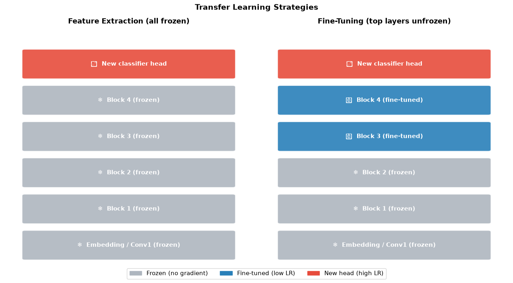
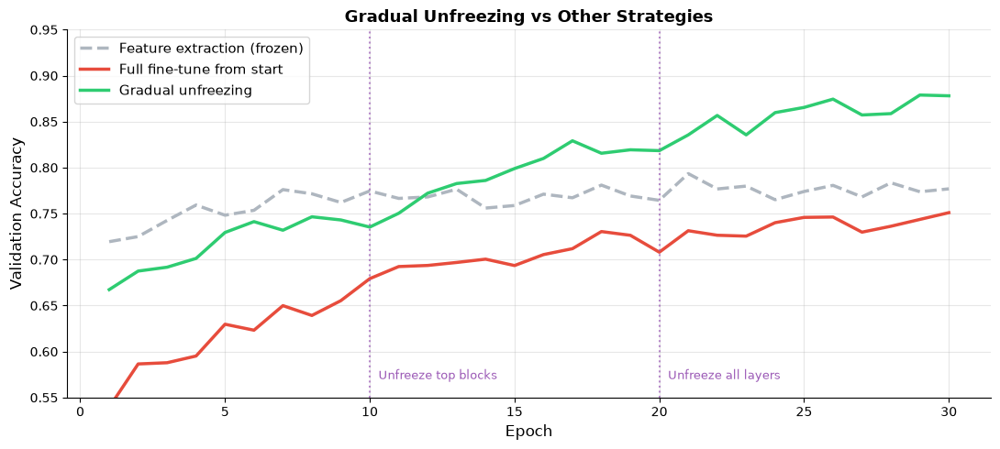
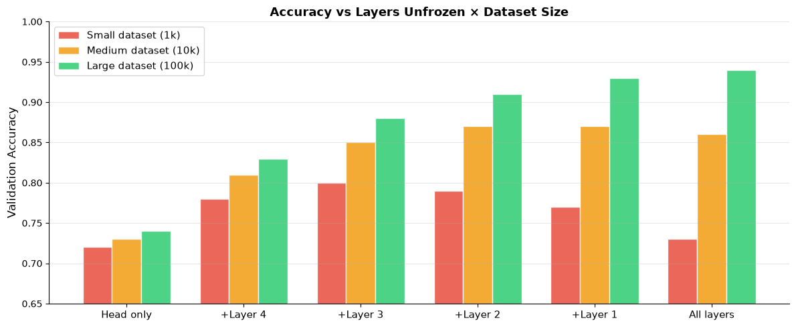

How do we use pretrained models?#
Topics: Transfer Learning · Fine-Tuning Strategies · Freezing Layers · Parameter-Efficient Fine-Tuning · HuggingFace
1. Transfer Learning#
What it is#
Reuse a model trained on a large dataset (source task) for a new task (target task)
The pretrained model has already learned general features — you adapt them
Dramatically reduces data and compute requirements
Key intuition#
A model trained on ImageNet knows about edges, textures, shapes, objects
These features are useful for most vision tasks — don’t retrain from scratch
Same for NLP: BERT trained on massive text knows grammar, semantics, world knowledge
Two main approaches#
Approach |
What you do |
When to use |
|---|---|---|
Feature extraction |
Freeze all pretrained layers, train only new head |
Small dataset, similar domain |
Fine-tuning |
Unfreeze some/all layers, train end-to-end |
Larger dataset, different domain |
import numpy as np
import matplotlib.pyplot as plt
import matplotlib.patches as mpatches
fig, axes = plt.subplots(1, 2, figsize=(13, 7))
layer_colors = {
'frozen' : '#AEB6BF',
'tuned' : '#2980B9',
'new' : '#E74C3C',
}
def draw_network(ax, title, layers):
ax.set_xlim(0, 6); ax.set_ylim(0, len(layers)*1.5 + 1); ax.axis('off')
ax.set_title(title, fontsize=13, fontweight='bold', pad=10)
for i, (label, style) in enumerate(reversed(layers)):
y = i * 1.5 + 0.5
color = layer_colors[style]
rect = mpatches.FancyBboxPatch((0.5, y), 5, 1.1,
boxstyle='round,pad=0.07', facecolor=color,
edgecolor='white', linewidth=2, alpha=0.9)
ax.add_patch(rect)
icon = '❄' if style == 'frozen' else ('🔥' if style == 'tuned' else '⭐')
ax.text(3.0, y+0.55, f'{icon} {label}', ha='center', va='center',
fontsize=11, fontweight='bold', color='white')
feature_extraction_layers = [
('New classifier head', 'new'),
('Block 4 (frozen)', 'frozen'),
('Block 3 (frozen)', 'frozen'),
('Block 2 (frozen)', 'frozen'),
('Block 1 (frozen)', 'frozen'),
('Embedding / Conv1 (frozen)', 'frozen'),
]
fine_tuning_layers = [
('New classifier head', 'new'),
('Block 4 (fine-tuned)', 'tuned'),
('Block 3 (fine-tuned)', 'tuned'),
('Block 2 (frozen)', 'frozen'),
('Block 1 (frozen)', 'frozen'),
('Embedding / Conv1 (frozen)', 'frozen'),
]
draw_network(axes[0], 'Feature Extraction (all frozen)', feature_extraction_layers)
draw_network(axes[1], 'Fine-Tuning (top layers unfrozen)', fine_tuning_layers)
legend_patches = [
mpatches.Patch(color=layer_colors['frozen'], label='Frozen (no gradient)'),
mpatches.Patch(color=layer_colors['tuned'], label='Fine-tuned (low LR)'),
mpatches.Patch(color=layer_colors['new'], label='New head (high LR)'),
]
fig.legend(handles=legend_patches, loc='lower center', ncol=3, fontsize=11,
bbox_to_anchor=(0.5, -0.02))
plt.suptitle('Transfer Learning Strategies', fontsize=14, fontweight='bold')
plt.tight_layout()
plt.savefig('transfer_learning.png', dpi=120, bbox_inches='tight')
plt.show()
/tmp/ipykernel_2526/3873434095.py:56: UserWarning: Glyph 11088 (\N{WHITE MEDIUM STAR}) missing from font(s) DejaVu Sans.
plt.tight_layout()
/tmp/ipykernel_2526/3873434095.py:56: UserWarning: Glyph 128293 (\N{FIRE}) missing from font(s) DejaVu Sans.
plt.tight_layout()
/tmp/ipykernel_2526/3873434095.py:57: UserWarning: Glyph 11088 (\N{WHITE MEDIUM STAR}) missing from font(s) DejaVu Sans.
plt.savefig('transfer_learning.png', dpi=120, bbox_inches='tight')
/tmp/ipykernel_2526/3873434095.py:57: UserWarning: Glyph 128293 (\N{FIRE}) missing from font(s) DejaVu Sans.
plt.savefig('transfer_learning.png', dpi=120, bbox_inches='tight')
/opt/hostedtoolcache/Python/3.11.15/x64/lib/python3.11/site-packages/IPython/core/pylabtools.py:158: UserWarning: Glyph 11088 (\N{WHITE MEDIUM STAR}) missing from font(s) DejaVu Sans.
fig.canvas.print_figure(bytes_io, **kw)
/opt/hostedtoolcache/Python/3.11.15/x64/lib/python3.11/site-packages/IPython/core/pylabtools.py:158: UserWarning: Glyph 128293 (\N{FIRE}) missing from font(s) DejaVu Sans.
fig.canvas.print_figure(bytes_io, **kw)

Interview Q&A#
When should you fine-tune vs feature extract?
Small dataset + similar domain → feature extraction (avoid overfitting)
Large dataset + different domain → full fine-tuning
Small dataset + different domain → fine-tune only top layers with heavy regularization
What learning rate do you use for fine-tuning?
Pretrained layers: very small LR (1e-5 to 1e-4) — don’t destroy learned features
New head: larger LR (1e-3) — needs to learn from scratch
Use differential learning rates per layer group
Gotchas#
Always unfreeze gradually — top layers first, then lower layers
Lower layers learn universal features (edges), higher layers learn task-specific ones
Fine-tuning with too high LR → catastrophic forgetting of pretrained knowledge
2. Freezing Layers & Gradual Unfreezing#
What it is#
Freezing: set
requires_grad=False— layer weights don’t update during trainingGradual unfreezing: start by training only new head, progressively unfreeze deeper layers
Why gradual unfreezing?#
Prevents catastrophic forgetting — lower layers adapt slowly
Allows head to stabilize before disturbing pretrained representations
Often yields better final accuracy than unfreezing everything at once
import numpy as np
import matplotlib.pyplot as plt
# Simulate accuracy curves for different unfreezing strategies
np.random.seed(42)
epochs = np.arange(1, 31)
def smooth(arr, noise=0.01):
return arr + np.random.randn(len(arr)) * noise
# Strategy 1: Freeze all, train head only
acc_frozen = smooth(0.70 + 0.08*(1 - np.exp(-epochs/5)))
# Strategy 2: Unfreeze everything from start
acc_full = smooth(0.55 + 0.20*(1 - np.exp(-epochs/8)) - 0.03*np.exp(-epochs/15))
# Strategy 3: Gradual unfreezing
acc_gradual = np.where(
epochs <= 10,
smooth(0.65 + 0.10*(1 - np.exp(-epochs/4))),
np.where(
epochs <= 20,
smooth(0.75 + 0.08*(1 - np.exp(-(epochs-10)/5))),
smooth(0.82 + 0.06*(1 - np.exp(-(epochs-20)/4)))
)
)
fig, ax = plt.subplots(figsize=(11, 5))
ax.plot(epochs, acc_frozen, color='#AEB6BF', linewidth=2.5, linestyle='--',
label='Feature extraction (frozen)')
ax.plot(epochs, acc_full, color='#E74C3C', linewidth=2.5,
label='Full fine-tune from start')
ax.plot(epochs, acc_gradual, color='#2ECC71', linewidth=2.5,
label='Gradual unfreezing')
ax.axvline(10, color='#9B59B6', linestyle=':', linewidth=1.5, alpha=0.7)
ax.axvline(20, color='#9B59B6', linestyle=':', linewidth=1.5, alpha=0.7)
ax.text(10.3, 0.57, 'Unfreeze top blocks', fontsize=9, color='#9B59B6')
ax.text(20.3, 0.57, 'Unfreeze all layers', fontsize=9, color='#9B59B6')
ax.set_xlabel('Epoch', fontsize=12)
ax.set_ylabel('Validation Accuracy', fontsize=12)
ax.set_title('Gradual Unfreezing vs Other Strategies', fontsize=13, fontweight='bold')
ax.set_ylim(0.55, 0.95)
ax.legend(fontsize=11)
ax.grid(True, alpha=0.3)
ax.spines['top'].set_visible(False)
ax.spines['right'].set_visible(False)
plt.tight_layout()
plt.savefig('gradual_unfreezing.png', dpi=120, bbox_inches='tight')
plt.show()

# PyTorch: freezing and unfreezing layers
import torch
import torch.nn as nn
from torchvision import models
# Load pretrained ResNet18
model = models.resnet18(weights='DEFAULT')
# Step 1: Freeze ALL pretrained layers
for param in model.parameters():
param.requires_grad = False
# Step 2: Replace classifier head with new one (unfrozen by default)
model.fc = nn.Linear(model.fc.in_features, 10) # 10 classes
# Check trainable params
total = sum(p.numel() for p in model.parameters())
trainable = sum(p.numel() for p in model.parameters() if p.requires_grad)
print(f"Total params : {total:,}")
print(f"Trainable params: {trainable:,} ({100*trainable/total:.1f}%)")
# Step 3: Gradually unfreeze — unfreeze layer4
for param in model.layer4.parameters():
param.requires_grad = True
trainable2 = sum(p.numel() for p in model.parameters() if p.requires_grad)
print(f"After unfreezing layer4: {trainable2:,} trainable params")
# Differential learning rates
optimizer = torch.optim.Adam([
{'params': model.layer4.parameters(), 'lr': 1e-4},
{'params': model.fc.parameters(), 'lr': 1e-3},
])
print(f"\nOptimizer groups: {len(optimizer.param_groups)}")
Downloading: "https://download.pytorch.org/models/resnet18-f37072fd.pth" to /home/runner/.cache/torch/hub/checkpoints/resnet18-f37072fd.pth
0%| | 0.00/44.7M [00:00<?, ?B/s]
59%|█████▉ | 26.5M/44.7M [00:00<00:00, 277MB/s]
100%|██████████| 44.7M/44.7M [00:00<00:00, 312MB/s]
Total params : 11,181,642
Trainable params: 5,130 (0.0%)
After unfreezing layer4: 8,398,858 trainable params
Optimizer groups: 2
Interview Q&A#
How do you implement differential learning rates?
Pass param groups list to optimizer:
[{'params': head, 'lr': 1e-3}, {'params': body, 'lr': 1e-5}]Head (new layers) gets high LR, pretrained layers get low LR
What is catastrophic forgetting?
Fine-tuning with high LR overwrites pretrained weights → model “forgets” what it learned
Fix: low LR for pretrained layers, gradual unfreezing, EWC (Elastic Weight Consolidation)
Gotchas#
Always call
model.eval()for BN and Dropout to work correctly during inferenceFrozen layers still contribute to forward pass — they just don’t receive gradient updates
Check trainable parameter count after freezing to verify it worked
3. Parameter-Efficient Fine-Tuning (PEFT)#
What it is#
Freeze the pretrained weights and train a small number of new parameters instead
LoRA is the dominant form: learn a low-rank update
W' = W + (α/r)·BAwithr << dFor a large model this trains well under 1% of parameters and often matches full fine-tuning
Key intuition#
The update needed to adapt a model has low intrinsic rank, even though the weight matrix doesn’t
You are not making the model smaller — you are making the change to it small
Why this became the default#
Memory. Full fine-tuning is dominated by optimizer state (Adam keeps two fp32 moments per parameter). Freezing the base removes gradients and optimizer state for those weights
No catastrophic forgetting. Base weights physically cannot move
Swappable adapters. One base model in memory serving many task adapters, chosen per request
QLoRA quantizes the frozen base to 4-bit, putting large-model fine-tuning on a single GPU
The modern default path#
# The current shape of a fine-tuning script (reference — requires transformers + peft):
#
# from transformers import AutoModelForCausalLM, AutoTokenizer
# from peft import LoraConfig, get_peft_model
#
# model = AutoModelForCausalLM.from_pretrained(model_id, dtype="bfloat16")
# config = LoraConfig(r=16, lora_alpha=32, target_modules=["q_proj", "v_proj"])
# model = get_peft_model(model, config)
# model.print_trainable_parameters() # -> "trainable: 0.06% of all params"
When you still want full fine-tuning#
Large domain shift where the base model’s representations genuinely don’t transfer
You have abundant data and compute, and are chasing the last few points of quality
You are producing a base model for others to adapt, rather than adapting one
HuggingFace essentials#
Task |
Class |
|---|---|
Text generation / chat / most LLM work |
|
Text classification |
|
Token classification (NER) |
|
Embeddings / retrieval |
|
Image classification |
|
pipeline is the fastest way to try a model; AutoTokenizer + AutoModelFor* is what you
write in production. See llm2 for what happens after fine-tuning — preference optimization,
RLVR, and distillation.
# HuggingFace usage patterns (reference — requires: pip install transformers)
# ── 1. Pipeline (fastest, 1-2 lines) ──
# from transformers import pipeline
#
# classifier = pipeline('sentiment-analysis')
# result = classifier("I love this course!")
# print(result) # [{'label': 'POSITIVE', 'score': 0.9998}]
#
# generator = pipeline('text-generation', model='gpt2')
# result = generator("Once upon a time", max_length=50)
# ── 2. Tokenizer + Model (more control) ──
# from transformers import AutoTokenizer, AutoModelForSequenceClassification
# import torch
#
# model_name = 'distilbert-base-uncased-finetuned-sst-2-english'
# tokenizer = AutoTokenizer.from_pretrained(model_name)
# model = AutoModelForSequenceClassification.from_pretrained(model_name)
#
# inputs = tokenizer("I love deep learning!", return_tensors='pt', truncation=True)
# outputs = model(**inputs)
# probs = torch.softmax(outputs.logits, dim=-1)
# print(probs)
# ── 3. Fine-tuning with Trainer ──
# from transformers import Trainer, TrainingArguments
#
# training_args = TrainingArguments(
# output_dir='./results',
# num_train_epochs=3,
# per_device_train_batch_size=16,
# per_device_eval_batch_size=64,
# warmup_steps=500,
# weight_decay=0.01,
# evaluation_strategy='epoch',
# save_strategy='epoch',
# load_best_model_at_end=True,
# )
#
# trainer = Trainer(
# model=model,
# args=training_args,
# train_dataset=train_dataset,
# eval_dataset=val_dataset,
# compute_metrics=compute_metrics,
# )
# trainer.train()
print("HuggingFace key patterns:")
print(" pipeline() → fastest inference, 2 lines")
print(" AutoTokenizer → handles tokenization for any model")
print(" AutoModel → loads correct architecture from model name")
print(" Trainer → full training loop with logging, checkpoints")
print()
print("Common model names:")
print(" 'bert-base-uncased' → BERT")
print(" 'distilbert-base-uncased' → smaller BERT")
print(" 'gpt2' → GPT-2")
print(" 'facebook/bart-large-cnn' → summarization")
print(" 'Helsinki-NLP/opus-mt-en-fr' → translation")
HuggingFace key patterns:
pipeline() → fastest inference, 2 lines
AutoTokenizer → handles tokenization for any model
AutoModel → loads correct architecture from model name
Trainer → full training loop with logging, checkpoints
Common model names:
'bert-base-uncased' → BERT
'distilbert-base-uncased' → smaller BERT
'gpt2' → GPT-2
'facebook/bart-large-cnn' → summarization
'Helsinki-NLP/opus-mt-en-fr' → translation
import numpy as np
import matplotlib.pyplot as plt
# Plot: accuracy vs number of unfrozen layers — common interview concept
layers = ['Head only', '+Layer 4', '+Layer 3', '+Layer 2', '+Layer 1', 'All layers']
small_dataset = [0.72, 0.78, 0.80, 0.79, 0.77, 0.73]
medium_dataset = [0.73, 0.81, 0.85, 0.87, 0.87, 0.86]
large_dataset = [0.74, 0.83, 0.88, 0.91, 0.93, 0.94]
x = np.arange(len(layers))
width = 0.25
fig, ax = plt.subplots(figsize=(12, 5))
bars1 = ax.bar(x - width, small_dataset, width, label='Small dataset (1k)', color='#E74C3C', alpha=0.85, edgecolor='white')
bars2 = ax.bar(x, medium_dataset, width, label='Medium dataset (10k)', color='#F39C12', alpha=0.85, edgecolor='white')
bars3 = ax.bar(x + width, large_dataset, width, label='Large dataset (100k)', color='#2ECC71', alpha=0.85, edgecolor='white')
ax.set_xticks(x)
ax.set_xticklabels(layers, fontsize=11)
ax.set_ylabel('Validation Accuracy', fontsize=12)
ax.set_title('Accuracy vs Layers Unfrozen × Dataset Size', fontsize=13, fontweight='bold')
ax.legend(fontsize=11)
ax.set_ylim(0.65, 1.0)
ax.grid(True, alpha=0.3, axis='y')
ax.spines['top'].set_visible(False)
ax.spines['right'].set_visible(False)
plt.tight_layout()
plt.savefig('unfreezing_vs_accuracy.png', dpi=120, bbox_inches='tight')
plt.show()

Interview Q&A#
BERT vs GPT — when to use which?
BERT (encoder) → understanding tasks: classification, NER, QA, semantic similarity
GPT (decoder) → generation tasks: text completion, summarization, chatbots
T5 (encoder-decoder) → both: translation, summarization, question answering
What is LoRA (Low-Rank Adaptation)?
Fine-tuning technique: add small trainable low-rank matrices alongside frozen pretrained weights
Only train the small matrices (~1% of params) → fast, memory efficient
State of the art for fine-tuning large language models
What is the difference between from_pretrained and training from scratch?
from_pretrained → loads weights trained on massive data → fast convergence, less data needed
From scratch → random initialization → needs huge dataset and compute
Gotchas#
Always use the tokenizer that matches the model — vocabulary and special tokens must match
return_tensors='pt'for PyTorch,'tf'for TensorFlowmodel.eval()before inference to disable dropout and set BN to inference modeMax token length varies by model — BERT is 512 tokens, truncate or chunk longer texts